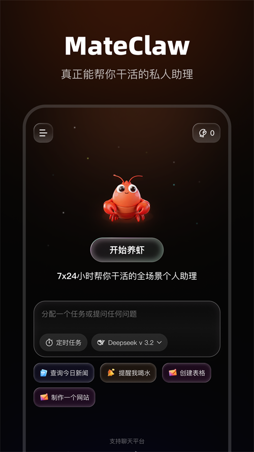

深夜十二点，我让 MateClaw 替我写完了竞品调研报告
产品经理的崩溃时刻：周五下班前接到周一要交的竞品调研报告。朋友扔来一个自部署的 AI 操作系统，我用它的先计划后执行模式，一个小时搞定了原本要三天的活。
周五晚上十二点，我盯着飞书那条消息，烟一根接一根。
老板在群里 @ 我和另外两个同事：「下周一早会，要一份我们产品线三个直接竞品的调研报告，要有数据面板、功能对比矩阵和结论页。」另外两个同事秒回「收到」，我盯着屏幕半天没敲字——我心里清楚，这条消息里藏着一个所有人都没说破的事：三个竞品，每个至少要翻官网、翻功能页、翻用户评价、翻定价策略，最后还要拉数据做对比。按我之前的节奏，这东西要三天。
「要不试试 MateClaw？」朋友是个折腾服务器的家伙，平时说话从不涉及办公工具——他的画风永远是「这个 Linux 发行版内核编译选项怎么调」或者「这个 Dockerfile 的多阶段构建有坑」。所以这次他主动给我推荐一个东西，我点开他发过来的链接之前，心里是有些忐忑的。
原来不是又一个聊天框
之前被各种 AI 助手伤过太多次。它们都长着同一个样子：一个聊天框、一行提示词、底下一排历史对话。你问它什么它答什么，但你让它「帮我做一份竞品调研」，它就开始跟你聊天——聊竞品是谁、聊调研框架、聊应该看哪些维度，聊到最后，调研报告的正文还是空白。
MateClaw官网 给我的第一冲击是它根本不是聊天框。

它是一整套可以自部署的 AI 操作系统——一个从官方下载就能拿到的 JAR 包，持久化数据和所有外发集成都在自己的机器上。我让朋友帮我在他闲置的一台云主机上部署了一份，从 Docker Compose 起 PostgreSQL 到登录控制台，大概二十分钟。登录后看到的是一个 Vue 3 写的控制台，左侧栏按使用意图分了六段——直接对话、让 Agent 做事、接外部能力、运维观察、团队管理、系统配置——不是按技术模块拆的，而是按「你想干嘛」拆的，这个设计思路本身就挺戳我。
研究助手模板：先计划，后执行
让我真正停下来的是它的 Agent 引擎。MateClaw 有两种执行模式——ReAct 是走一步看一步，Plan-and-Execute 是先把整条路画出来再走。这两种模式共用同一个 StateGraph 引擎，不是两套独立系统，而是在同一张执行图上应用不同的编排规则。
研究助手这个模板，默认就是 Plan-and-Execute 模式。
我新建 Agent，选了研究助手模板，改了个名字叫「竞品调研员」，然后把老板给的任务直接粘进去——「帮我做一份 A、B、C 三个竞品的调研报告，要有数据面板、功能对比矩阵和结论页，数据要真实可溯源，不能编造。」
它没有像其他助手那样立刻开始跟我讨论。
它先给了我一份计划。
分六个步骤：第一步用 web search 分别爬三个竞品的官网首页、产品页和定价页，第二步读取 Wiki 里已有的行业基础数据，第三步对每个竞品做用户评价的聚合和关键词提取，第四步整理功能对比矩阵，第五步拉取公开的用户量和营收数据做数据面板，第六步写结论和建议。每一步都标了预计耗时，总时长四十七分钟。
我点了「开始执行」。
四十七分钟的守望
我没有在那傻等。计划里每一步执行完，MateClaw 都会在 UI 上更新进度条——绿色的小勾，带执行结果摘要。我去倒了杯咖啡，回来的时候第一步已经完成了，三个竞品的官网数据全部拉了下来，自动去重、自动结构化存进了它的 Wiki。
中途第二步遇到了一个小问题：某个竞品的定价页被 Cloudflare 挡了，web search 工具拿不到完整内容。MateClaw 没有卡死，也没有报错停止，它自动调整了后续步骤——原来计划里第二步是读取 Wiki，它改成了先用备用的浏览器工具再试一次，同时跳过这个竞品的定价信息收集、先去完成另外两个。大概两分钟后它又补了回来——这次成功了。
我后来才知道这就是 Plan-and-Execute 模式的核心价值：不是一条路走到黑。计划是活的，执行过程中哪一步出问题了，Agent 会重新调整后续步骤的依赖关系，而不是整个任务直接崩掉。

四十七分钟后，Agent 回来给我做最终验证。它列了三个竞品各十二个关键功能点，一张对比矩阵覆盖了核心差异，数据面板里有公开可查的用户规模和营收估算，结论页把三个产品各自的优劣势点了出来，最后给了三条我们产品线可以切入的方向。
我把那份报告打开，从头到尾翻了一遍。没有编造的数据，所有引用的用户评价都附了来源链接，功能点对比和我自己之前整理的草稿基本一致——它甚至把我草稿里漏掉的一个竞品新出的 AI 功能补上了。
它为什么能做到这些
后来我去翻了它的文档才弄明白，MateClaw 能把这个活干下来，不只是因为它有研究助手模板和 Plan-and-Execute 引擎，而是整个产品从设计上就是按「让 Agent 做事」来的。
它的七个起步模板——通用助手、研究、代码、写作、知识策展、数据分析、自定义——每个都是开箱即用的起点，预置了 System Prompt、默认执行类型和推荐工具集。模板不是终点，拿到之后做三件事：改名字和图标让团队一眼能认、收紧 System Prompt 加上具体要求、审计工具权限去掉不想让 Agent 碰的东西。而且模板的配置不会被后续升级自动覆盖——你改了就是你的了。
底层技术选型也够务实。后端是 Spring Boot 3.5 加 Spring AI Alibaba 1.1，Agent 运行时是一张 StateGraph，reasoning、action、observation、plan generation、step execution 都是图上的节点。前端 Vue 3 加 TypeScript，Pinia 管状态，Element Plus 加 Tailwind 做 UI。桌面端直接 Electron 包 JRE 21 和后端 JAR，双击启动，用户完全不需要知道底下跑的是什么。
还有一点很重要——部署上。一个 JAR 包就能跑，桌面端自带 JRE，Docker Compose 一条命令启动全套。更关键的是数据掌控：对话、日志、文档和记忆都持久化在自己的部署里，只有完成任务所需的内容会发出去。一开始上某个云模型，等本地 GPU 到位了就切本地模型，某个高价值 Agent 单独挂一个模型，其他的走便宜的——它的 Agent 配置和工具图不关心底下是什么模型接口。
周一早上
周一早会，我把那份报告投到屏幕上。另外两个同事各交了一份，花了一个周末的那种。老板扫了三份，翻到我的时候停了——数据面板的格式、对比矩阵的清晰度、结论的精炼度，明显高出一截。
「你什么时候搞的？」老板问。
「周五晚上。」
我没有提 MateClaw 的名字，也没有提它怎么帮我干活的细节。但那天早会散场之后，有三个同事过来找我私聊：「那报告是你自己一个人做的？用了什么工具？」
我笑了笑，把朋友那天发我的那条链接转发给了他们。
对了，那个链接就是 MateClaw 官网。这套资料在GitHub、Gitee、GitCode 三个开源仓库都有同步，直接搜就能找到 Apache 2.0 协议的源码和完整文档。至于你想从哪个开始，看你习惯用哪个平台就好。